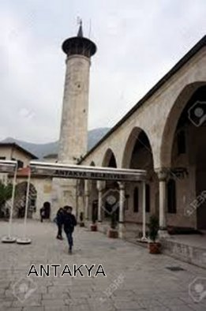
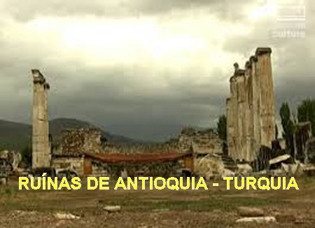
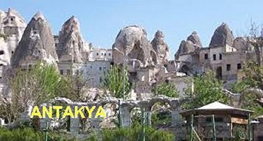

“OS ESTUDOS O CONDUZIRAM A DEUS”
SEUS PAIS
João nasceu em Antioquia (atualmente denominada de Antakya) no sul da Turquia, provavelmente no ano 349, de pais grego-sírios verdadeiramente cristãos. Seu pai Secundus foi general do exército, homem com grande valor militar e caráter admirável. Todavia faleceu em combate. Sua mãe, a senhora Anthouse (Antusa), uma cristã que possuía qualidades excepcionais e uma fé sólida no Cristianismo, cultivando em grau maior, o precioso dom da piedade. Com a morte do marido, ela não quis se casar novamente, permanecendo viúva desde a idade de 20 anos. Preferiu dedicar sua vida a DEUS e se concentrar na educação do seu filho João.

INSTRUÇÃO E EDUCAÇÃO
A senhora Antusa nos seus ensinamentos inspirou o filho a cultivar a castidade, sedimentando no coração do filho as sementes valiosas das virtudes. Por seu lado, João amando o carinho materno, soube aproveitar aqueles valiosos ensinamentos, e ao longo da existência revelou uma natureza ardente pela piedade e, sobretudo, pela defesa da justiça, com zelo intrépido e uma coragem audaz. A senhora Antusa tanto se preocupou com a instrução do filho que conseguiu os melhores mestres para ajudar na educação dele. Assim, com 16 anos de idade João começou a frequentar os centros de ensino, começando pela filosofia, cujo professor era Andragácio, um filósofo importante e respeitado nos meios culturais. Também iniciou as aulas de retórica, a cargo do professor Libânio, que era um orador famoso e que o preparou dignamente. O empenho de João foi tão magnífico, que na continuidade das aulas, o próprio professor ficou feliz com o êxito e impressionado com a eloquência de João, num discurso que ele preparou e apresentou em honra de alguns príncipes, num período em que trabalhava no Fórum.
O Mestre Libânio chegou a lhe dizer: “Alegra-me que juntamente com as tarefas do foro, cultives as letras. Ditoso o orador que sabe louvar assim! Ditosos os que merecem ser louvados por semelhante orador!”
SEU CORAÇÃO CLAMOU POR DEUS
Na verdade, João de Antioquia adquiriu um amadurecimento espiritual muito rápido, pois ainda jovem, com 18 anos de idade, já se manifestava não satisfeito e cansado com o estudo das artes. Começou a olhar com grande simpatia e entusiasmo os livros sobre DEUS, sentindo que o seu coração pulsava forte e tinha uma grande satisfação com a leitura da Doutrina Sagrada.
E assim, impulsionado por estes sentimentos no ano 367 passou a frequentar o catecumenato, sob a direção do Bispo Melécio de Antioquia. Ele tinha grande admiração pelo senhor Bispo, apreciando a sua administração correta, e seus ensinamentos cristãos revestidos de muito amor e dignidade. Tanto o admirava que o próprio João, sobre o Bispo, deu um precioso testemunho: “A santidade do senhor Bispo Melécio é tão visível que refletia no seu próprio semblante, um coração repleto de bondade”. Por outro lado, o Santo Bispo logo vislumbrou naquele jovem um grande valor para o Cristianismo. E então, a partir daquele momento o senhor Bispo se fazia acompanhar por ele, como se verdadeiramente, o João fosse o seu Secretário pessoal. E assim, fraternalmente unidos, João de Antioquia serviu ao senhor Bispo Melécio por três anos e foi Batizado por ele em 368. E ainda, por sua admirável retórica, na continuidade dos estudos, o senhor Bispo o promoveu a Leitor em 371.
SUA ORATÓRIA AGRADAVA A TODOS
A tal ponto João se destacava com o fervor da sua oratória, que era apreciado por todos, também pela beleza do conteúdo da sua palavra, revelando de grande valor espiritual e agradável ao povo, por um estilo claro e correto. Mestre Libânio gostava tanto dele que prestes a morrer disse: “De bom grado nomearia João meu sucessor, se os cristãos não o tivessem ganhado para a sua seita”.
Neste período João, por indicação do Bispo Melécio, foi estudar no Asceterio, um tipo de Seminário em Antioquia, tornando-se aluno de Diodoro de Tarso, famoso exegeta que era condiscípulo de Teodoro de Mopsuéstia. Enquanto feliz desenvolvia os seus estudos, os adversários do seu amigo e bem-feitor Bispo Melécio, conseguiram enviar o Bispo para o seu terceiro desterro na Armênia. A separação foi profundamente sentida por João de Antioquia, que permaneceu abatido e decidido a abandonar toda e qualquer profissão, desapontado e admirado com a abominável covardia e maldade que existia no coração de muitas pessoas. E este fato também o estimulou a pensar a executar um projeto que há tempos guardava no interior da sua alma. E na verdade, ele já teria se retirado do mundo civilizado imediatamente, se não fosse por sua mãe, que com lágrimas nos olhos, lhe suplicou, “quer me deixar viúva pela segunda vez!”
VIVENDO COMO UM MONGE
Por isso mesmo, decidiu permanecer na própria casa, vivendo exclusivamente dentro do lar, como se estivesse num Mosteiro, seguindo a regra exigente dos Monges. Sua mãe com muita aplicação ensinava ao filho as coisas da vida, enquanto ele aperfeiçoava os seus estudos. E assim João de Antioquia passou o resto da juventude. Não participava da vida social, praticava o jejum, e a noite, permanecia lendo durante várias horas as Sagradas Escrituras, iluminado por uma pequena lamparina.
Entretanto, não abandonou as amizades sinceras, que com prazer ele cultivava o trato, principalmente de alguns amigos mais íntimos: Diodoro e Basílio que na continuidade, se tornaram Monges. E como é natural, João e a dupla de Monges, não demorou muito a ficar em evidencia na cidade, criando inclusive certa fama, pois sendo os três companheiros religiosos inseparáveis, estudavam as Leis de DEUS e logo foram considerados “Monges zelosos”, competentes e praticantes da verdadeira fé cristã.
BISPOS DA SÍRIA PROCURAM SACERDOTES

Com o tempo os comentários evoluíram. Numa ocasião, objetivando encontrar pessoas capazes que pudessem assumir o sacerdócio, os Bispos da Síria em Antioquia, decidiram elevar João e Basílio ao Sacerdócio. Diodoro por necessidade havia tomado outra direção. Mais tarde Diodoro por suas qualidades e excepcionais merecimentos foi escolhido Bispo de Tarso. Basílio se encontrava num cenóbio (habitação de monges) próximo a residência, esperando que João o seguisse. Mas aconteceu o imprevisível: João não quis aceitar o Sacerdócio. E foi uma grande surpresa, porque ninguém imaginava que acontecesse a negativa de João, que dizia ser indigno da indicação dos Bispos. Os companheiros tentaram dissuadi-lo por todas as maneiras, em vão, ele se negava a aceitar a nomeação. E aí nasceu outro problema: o seu amigo Basílio diante da situação, também se tornou inflexível, só aceitaria ser ordenado Sacerdote se o João de Antioquia também aceitasse.Então, João muito inteligente, para não deixar os Bispos da cidade totalmente desapontados, decidiu usar um estratagema. Sem nada dizer ao amigo, deixou correrem todos os preparativos, mas no dia da cerimônia desapareceu como fumaça, sem deixar rastro. Basílio recebeu a nomeação e assumiu as novas funções de Sacerdote. Só tempos depois encontrou o amigo João que se abraçaram e aconteceu o necessário pedido de desculpas. Basílio tornou-se o famoso São Basílio de Cesareia.
DESEJAVA SER UM EREMITA
Na realidade, este acontecimento, ocorreu na mesma época do falecimento da mãe de João, e produziu nele outro efeito: de liberar a possibilidade que ele sempre sonhava, de um dia colocar em prática se retirando para o deserto. Este fato aconteceu por volta do ano 374. João de Antioquia vendeu todo o seu patrimônio e dirigiu-se ao Monte Silpio vizinho da cidade, objetivando unir-se aos cenóbios, os quais já eram naquela época “Como as estrelas que brilham na noite”, conforme disse João mais tarde. Ali viveu quatro anos na companhia dos eremitas que lá habitavam.
Depois foi viver por mais dois anos, numa gruta, num local deserto, inicialmente por pouco tempo na companhia de um eremita idoso (provavelmente Syro, que era um mestre veterano bem conhecido). Depois ele permaneceu sozinho, completamente isolado da civilização, seguindo o seu plano de vida, estudando profundamente as Sagradas Escrituras, principalmente os Evangelhos e as Cartas de São Paulo. O seu grande objetivo era estudar para melhor conhecer NOSSO SENHOR. Ele passava o tempo rezando e meditando nos ensinamentos da Escritura. Na solidão da caverna também escreveu diversas obras. Mas por outro lado, quis enfrentar com disposição, a difícil batalha para sujeitar a carne de seu próprio corpo, a todas as exigências do seu espírito. Esta realidade foi uma batalha longa e difícil, porque se expondo também ao jejum e ao frio seu organismo não resistiu, trazendo sérios prejuízos à saúde. Aproximadamente em 379, com a saúde enfraquecida pelas noites não dormidas e os jejuns, sentiu a necessidade de retornar.
REGRESSOU A ANTIOQUIA

Fixou-se na cidade e logo foi recebido pelo seu benfeitor e amigo Bispo Melécio que o ordenou Diácono em 381, determinando que ele continuasse também como Leitor. Nesta época João de Antioquia, também reencontrou o seu amigo Basílio e juntos, continuaram com os estudos sobre temas sagrados, exercitando um frutuoso período de engrandecimento espiritual.
Todavia, neste mesmo ano de 381, o senhor Bispo Dom Melécio que não estava bem de saúde, seu organismo não resistiu e ele faleceu. Foi escolhido Dom Flaviano o novo Bispo de Antioquia, que desde o inicio, simpatizou com o trabalho e o desempenho de João, e cultivou a sua amizade. Ordenou-o Sacerdote em 386 e o nomeou pregador oficial da Diocese, fato que lhe deu plena oportunidade, tornando-se um celebre e brilhante orador das Igrejas de Antioquia.
ADMIRÁVEL ORADOR
Durante 12 anos o Padre João de Antioquia assumiu a direção espiritual do povo, para alegria de todos que ouviam e se alegravam profundamente com as suas pregações. Seus ardorosos sermões eram ouvidos com atenção e avidez, e sempre, versavam sobre as Sagradas Escrituras. E tanta emoção causava que era interrompido com muitos aplausos. Na verdade, ele não gostava dos aplausos, comentava particularmente, mas ficava “sem jeito” de proibir o povo de aplaudir. Porque também, ele se servia do púlpito para criticar os maus costumes da época, corrigindo os hábitos dos cristãos, procurando fazê-los caminhar sempre pela vereda do bem, da colaboração mútua e da permanente e sincera união com JESUS, nosso DEUS e SENHOR. Sua eloquência era tão brilhante que ele conseguiu unir toda a cidade e provocar impressionante entusiasmo entre os ouvintes. Suas palavras penetravam profundamente os corações elevando as almas a DEUS, que com disposição amorosa buscavam exercitar todas as virtudes.